Nursing as a profession
What nurses do, who regulates them, and the groups that shape the work.
What nursing is
The ANA (American Nurses Association) defines nursing as the art and science of caring: protecting, promoting and optimizing health and function; preventing illness and injury; helping healing; easing suffering through compassionate presence; diagnosing and treating human responses; and advocating for individuals, families, groups, communities and populations.
Roles of the nurse
- Caregiver: gives direct client care
- Educator: teaches clients and families
- Advocate: supports clients' rights and choices
- Counselor: gives emotional support
- Leader: oversees nursing staff
- Also: case manager (coordinates care among professionals), researcher, manager, change agent (helps practice adapt to client needs)
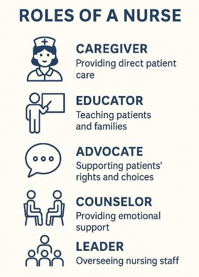
How practice is regulated
The model of professional nursing practice regulation answers the who, what, when, where and why of practice, so care is knowledgeable, safe and complete. From the broadest layer to the most personal:
| Layer | What it is |
|---|---|
| Code of Ethics for Nurses | The values, obligations to clients and ideals of the profession (ANA) |
| Scope and Standards of Practice | Statements that describe a competent level of care and professionalism |
| Nurse Practice Act (NPA) | State law on what nurses may do: licensure, scope, approved programs. It differs from state to state |
| Policies and procedures | Rules set by each facility or organization |
| Self-determination | Each nurse's own responsibility to act professionally within their role |
- BON (Board of Nursing): each state's regulatory body. It sets practice rules, approves nursing programs, grants licenses and handles discipline. Here it's the Maryland Board of Nursing, and licensure and renewal rules vary by jurisdiction.
- NCLEX (National Council Licensure Examination): the exam graduates pass to be licensed (NCLEX-RN or NCLEX-PN).
- NLC (Nurse Licensure Compact): one license lets a nurse practice in every state that joined the compact.
- Scope of practice: what a licensed nurse is competent and permitted to do. Standards of care: the minimum care a professional must give, compared with peers of similar education and experience.
- Standards of practice describe competent care using the nursing process; standards of professional performance describe competent professional behavior.
- ACEN (Accreditation Commission for Education in Nursing) and CCNE (Commission on Collegiate Nursing Education) accredit nursing schools.
Organizations and competencies
ANA
Founded 1896. Represents the interests of nurses; writes the Code of Ethics. Runs Healthy Nurse, Healthy Nation (2017) to promote healthy lifestyles for nurses.
NLN (National League for Nursing)
Promotes excellence in nursing education. Four core values: caring, integrity, diversity and excellence.
NSNA (National Student Nurses' Association)
Founded 1952 for students. Six core values: advocacy, leadership and autonomy, professionalism, care, diversity and quality education.
QSEN (Quality and Safety Education for Nursing)
The knowledge, skills and attitudes every prelicensure student should have. Six competencies:
| Competency | Means |
|---|---|
| Patient-centered care | Care based on the client's physical, psychological, social, spiritual and cultural needs |
| Teamwork and collaboration | Working in partnership with the interprofessional team |
| Evidence-based practice (EBP) | Using client data, current research and credible sources for clinical judgment |
| Quality improvement (QI) | Making and carrying out plans to improve care |
| Safety | Lowering the risk of harm to clients, self and others |
| Informatics | Using information technology to communicate and support care |
"Patients Trust Every Quality Safe Interaction": Patient-centered care, Teamwork, EBP, QI, Safety, Informatics.
Your program's organizing framework
Human flourishing (client-centered care), nursing judgment (safety standards and information), professional identity (teamwork and collaboration) and spirit of inquiry (quality improvement and evidence-based practice). Core values: diversity, patient-centeredness, ethics, caring, integrity, excellence and holism.
People who shaped nursing
| Who | Known for |
|---|---|
| Florence Nightingale | Crimean War (1854–1856): collected and reported data linking unclean conditions to wound infections, an early form of evidence-based practice. "The lady with the lamp" |
| Clara Barton | Served on battlefields and started the American Red Cross |
| Dorothea Dix | A teacher, not a nurse: pushed for formal nurse training and for mental health reform |
| Ildaura Murillo-Rohde | Founded the National Association of Hispanic Nurses |
| Eddie Bernice Johnson | First registered nurse elected to the U.S. Congress; introduced the STEM (science, technology, engineering and mathematics) Education Act in 2012 |
The first U.S. school of nursing opened in 1872.
Quick check
Which document is state law and changes from state to state?
The Nurse Practice Act.
Which group grants licenses and handles discipline?
The state Board of Nursing (here, the Maryland Board of Nursing).
A nurse moves to another compact state without getting a new license. What allows this?
The Nurse Licensure Compact.
Name the six QSEN competencies.
Patient-centered care, teamwork and collaboration, evidence-based practice, quality improvement, safety, informatics.
Clinical judgment & the NCLEX
How a nurse thinks, and how test questions are built around it.
The clinical judgment model
- Recognize cues: pick out relevant, important information from different sources
- Analyze cues: organize and connect them to the client's clinical picture
- Prioritize hypotheses: rank the possible problems by urgency, likelihood and risk
- Generate solutions: set expected outcomes and the interventions to reach them
- Take action: carry out the solutions for the highest priority
- Evaluate outcomes: compare what happened with what you expected
NGN (Next Generation NCLEX) question types
| Type | What you do |
|---|---|
| Multiple choice | One question, four choices: pick the best one |
| Multiple response | Select all that apply |
| Drop-down and cloze | Fill blanks in a sentence or table from a menu of choices |
| Highlight | Highlight the findings in a chart or note that answer the question |
| Hot spot | Click the right spot on a picture |
| Fill in the blank | Type the answer; mostly math |
| Bow tie | Pick the condition in the middle, actions on one side and parameters to monitor on the other |
| Case studies | Pull the pertinent information from a client chart to answer several questions |
Quick check
Which clinical judgment step ranks the client's possible problems?
Prioritize hypotheses.
Nursing process vs clinical judgment: which is "what we do" and which is "how we think"?
The nursing process is what we do; clinical judgment is how we think while doing it.
The nursing process
Five steps that build the plan of care, shift by shift.
Five steps
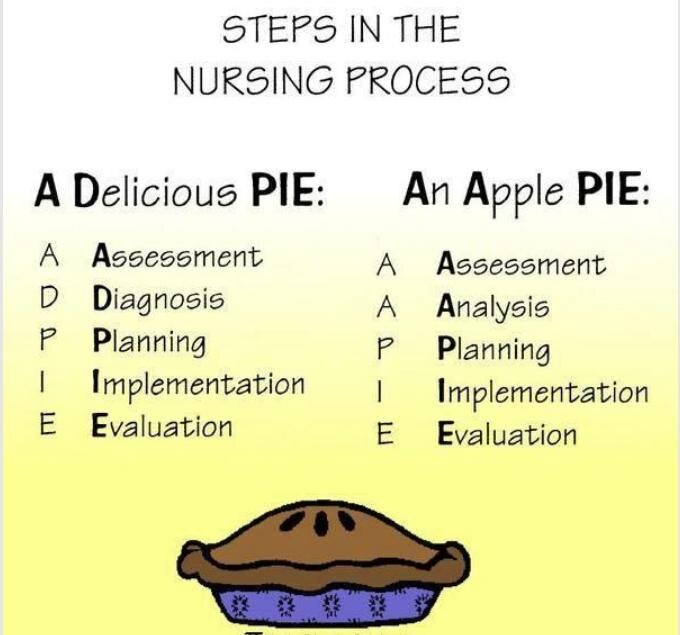
ADPIE (A Delicious PIE) or AAPIE (An Apple PIE): Assessment, Diagnosis (Analysis), Planning, Implementation, Evaluation. Diagnosis and analysis are the same step under two names.
The nursing process builds the plan of care (POC): how we know what to focus on each shift to restore or improve the client's condition. The whole interprofessional team uses it.
1 · Assessment
The nurse collects, organizes and validates data from the health history (interview), the physical assessment, the medical record, and objective and subjective data.
Objective data
- Measurable, factual; observed by the nurse through the senses (inspection, auscultation, palpation, smell)
- Examples: BP (blood pressure) 120/80; pulse 100, regular; 500 mL clear yellow urine; total cholesterol 275; skin warm and dry
- Vital signs are objective data
Subjective data
- What the client (or family) reports; collected in the interview
- Document in quotation marks, in the client's exact words when possible
- Examples: "It feels like someone is sitting on my chest." "It burns when I urinate." "I feel like I'm going to be sick."
Subjective is Said; Objective is Observed. If only the client can tell you (pain, nausea, itching), it's subjective.
Lab results are part of a full assessment. Values differ between facilities, so this course uses the ATI values, adult ranges only, for the CBC (complete blood count) and CMP (comprehensive metabolic panel). See the CBC/CMP flashcards.
2 · Analysis (nursing diagnosis)
A nursing diagnosis is a clinical judgment about a person's response to an actual or potential health condition. NANDA-I (North American Nursing Diagnosis Association International) develops and standardizes them. It is not a medical diagnosis.
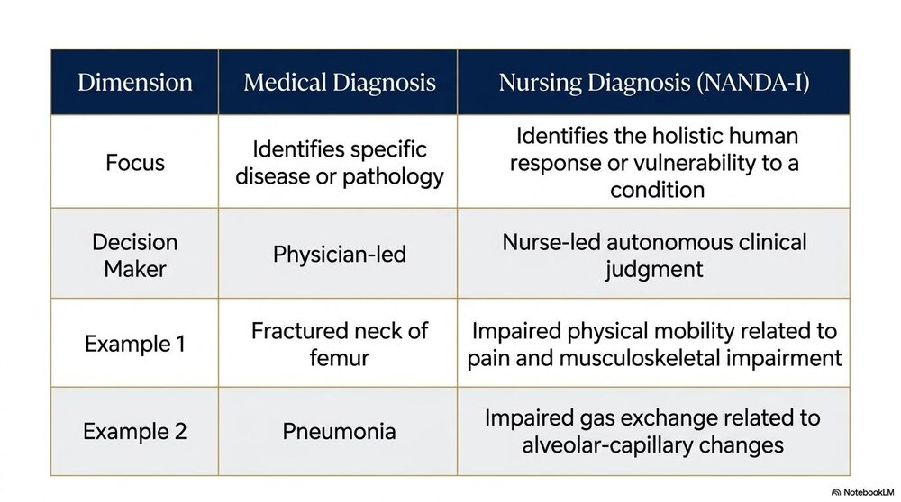
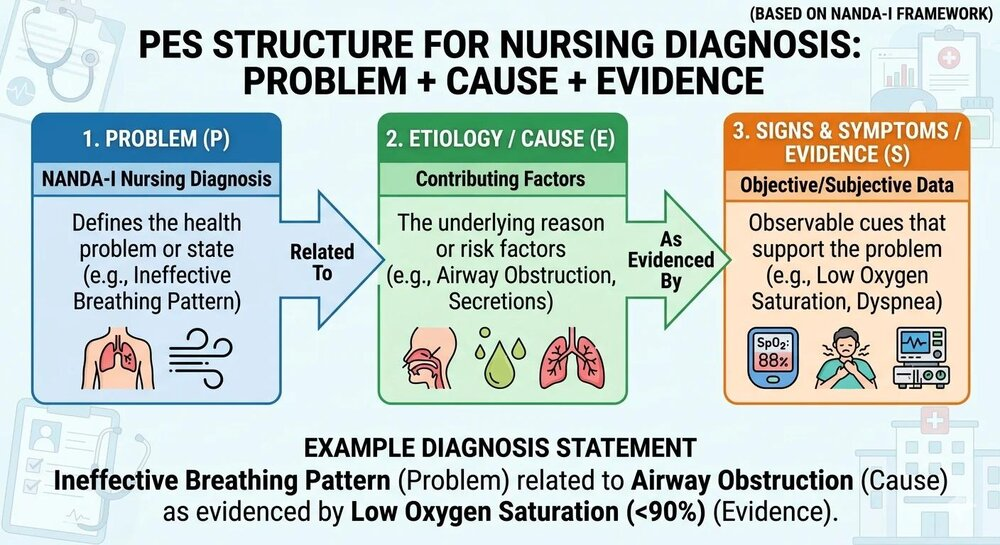
Actual diagnosis
Something happening now.
Problem r/t (related to) cause AEB (as evidenced by) signs and symptoms.
Impaired physical mobility r/t pain in lower extremities AEB client rating pain 8/10 and reluctance to walk.
"Risk for" diagnosis
A problem that hasn't happened yet but could, because of risk factors.
Risk for problem r/t risk factors. No AEB: there are no signs yet.
Risk for infection r/t surgical incision and compromised immune system.
3 · Planning
Generate solutions: set goals and choose individualized, evidence-based interventions. Goals are written in SMART format and can be short or long term.
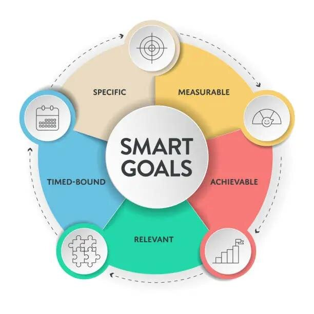
SMART: Specific, Measurable, Achievable (attainable), Relevant (realistic), Time-bound.
Short term (days): "The client will remain afebrile during hospitalization."
Long term (weeks to months): "The client will show no signs or symptoms of a surgical site infection within 30 days of surgery."
A measurable goal names an observable behavior and a time frame: "The client will walk 100 feet in the hallway with a walker by the end of the shift." Words like "understand," "feel" or "tolerate better" can't be measured.
Every intervention gets a rationale (the "why"), and it must be evidence based. Example: clean the incision with chlorhexidine every shift as ordered, because chlorhexidine lowers infection risk by reducing bacteria.
4 · Implementation and 5 · Evaluation
Implementation (take action)
- Carry out the planned interventions: give medications, reinforce teaching, reposition
- Direct care: at the bedside. Indirect care: away from the bedside (calling the provider, charting)
Evaluation
- Was each intervention effective? Was the goal met?
- Continue, modify or discontinue the intervention
- Document the client's response: what they said (subjective) and what you observed (objective)
Writing goals is planning. Doing the intervention is implementation. Watching the client walk 50 feet to see whether the day-3 goal was met is evaluation.
Let's practice: Mr. Jones
Mr. Jones, 78, came to the emergency department last night after falling and breaking his hip, and had it surgically repaired. The UAP (unlicensed assistive personnel) reports: temperature 39.0 °C (102.2 °F), pulse 122, respirations 16, BP 140/90, pain 4/10.
Which findings are outside the expected range?
Temperature (fever is above 38 °C), pulse (tachycardia is above 100) and BP (140/90 is stage 2 hypertension). Respirations of 16 are within 12–20. A fever with a fast heart rate after surgery needs follow-up and a report to the provider.
Quick check
"I feel sick to my stomach." Subjective or objective?
Subjective: only the client can report it.
Why does a "risk for" diagnosis have no AEB part?
The problem hasn't happened, so there are no signs or symptoms to list, only risk factors.
Which nursing process step identifies outcomes and the interventions to reach them?
Planning.
"The client will understand the diet." What's wrong with this goal?
It isn't measurable and has no time frame.
Priority setting
Deciding who and what comes first. A lack of prioritization harms clients.
Maslow's hierarchy of needs
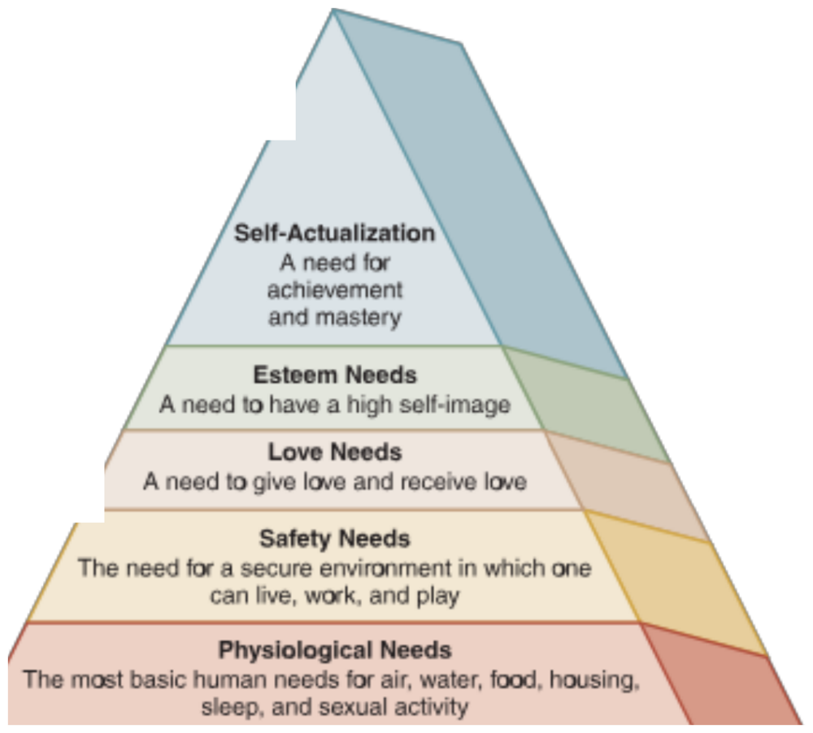
Meet the lower, most basic needs first.
- Physiological: air, water, food, housing, sleep, sexual activity. Airway comes first
- Safety: a secure place to live, work and play
- Love and belonging: giving and receiving love
- Esteem: a high self-image
- Self-actualization: achievement and mastery
ABCDE for acutely ill clients
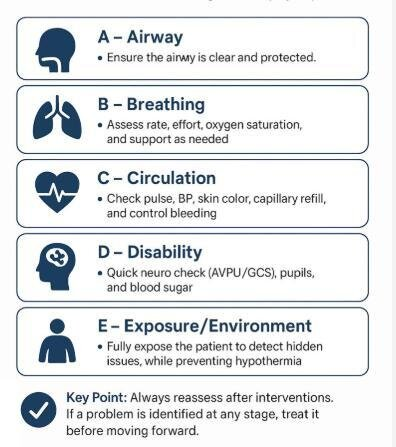
| Step | Assess |
|---|---|
| Airway | Clear and protected |
| Breathing | Rate, depth, ease; accessory muscles; lung sounds; oxygen saturation |
| Circulation | Pulse rate and strength, BP, capillary refill, skin tone, urine output; control bleeding |
| Disability | Alert and oriented? Arousable? Responds to painful stimuli? Pupils, blood sugar |
| Exposure | Look for hidden injuries while keeping the client warm |
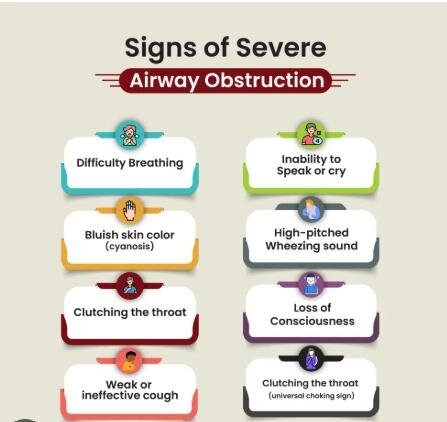
Other ways to set priorities
| Framework | Goes first |
|---|---|
| Acute vs chronic | The sudden (acute) problem |
| Urgent vs nonurgent | The urgent need |
| Unstable vs stable | The unstable client |
| Safety and risk reduction | Whatever poses the greatest immediate risk to physical or psychological well-being |
| Least restrictive / least invasive | The gentlest intervention that still works: reorientation and a sitter before restraints |
| Survival potential | Clients most likely to survive with prompt care |
Triage colors
| Color | Category | Means |
|---|---|---|
| Red | Emergent | Life-threatening; needs care now |
| Yellow | Urgent or delayed | Serious, but can wait briefly |
| Green | Nonurgent or minimal | Minor; can wait hours or days |
| Black | Expectant | Deceased or not expected to survive; comfort measures |
Rationing: deciding how to use resources that are too scarce to meet every need.
Quick check
What is the first step in the ABCDE approach for an acutely ill client?
Assess the airway.
Which findings guide the nurse's decisions about a client's status: level of consciousness, skin color, vital signs, room decorations?
Level of consciousness, skin color and vital signs.
Which is NOT an effective priority-setting practice: applying Maslow, ignoring nonurgent needs, reducing injury risk first, ranking client acuity?
Ignoring nonurgent needs. They come later, but they still get met.
A postoperative client needs airway clearance, pain relief, a visit from family and help choosing a menu. Which first?
Airway clearance: a physiological need, and airway comes first.
Health promotion & disease prevention
Keeping people well, catching disease early, and limiting its damage.
Terms
- Health promotion: helping people gain control over and improve their health. Tools on the slides: client education, health literacy, supportive environments, public policy, referrals.
- Wellness: a positive state of health, with spiritual, emotional, physical and environmental dimensions.
- Disease prevention: measures that limit exposure to, or the effects of, illness or disease.
- Health education: learning experiences that build knowledge or shape attitudes. Health outcomes: the results of promotion and prevention.
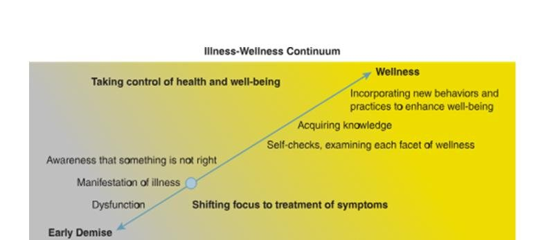
What affects health
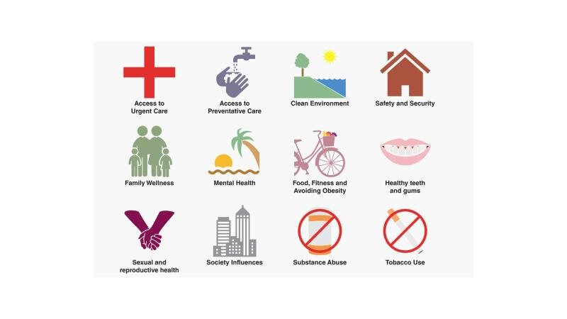
Modifiable risk factors
Can be controlled: physical inactivity, smoking, alcohol, unhealthy (high-fat) diet, high BP, uncontrolled diabetes, unsafe behaviors (no seat belt, texting while driving).
Nonmodifiable risk factors
Can't be controlled: age, sex (gender), genetics and family history, race and ethnicity.
Levels of prevention
| Level | Goal | Examples |
|---|---|---|
| Primary | Lower the risk of getting a disease at all | Vaccines, changing behavior, banning dangerous substances |
| Secondary | Screen to catch disease early, before symptoms | BP checks, cholesterol labs, colonoscopies, mammograms |
| Tertiary | Control a disease's chronic effects and return to the best function | Physical therapy, cardiac rehab, self-care teaching to prevent complications |
| Quaternary | Protect clients from too much medical intervention | Avoiding tests or treatments that would do more harm than good |
Prevent, screen, rehab, hold back. Primary prevents it, secondary screens for it, tertiary rehabs it, quaternary holds back on overtreatment.
Quick check
A flu vaccine is which level of prevention?
Primary.
A mammogram?
Secondary: screening for early detection.
Cardiac rehab after a heart attack?
Tertiary.
Is family history a modifiable risk factor?
No, it's nonmodifiable.
Managing client care
Time management, communication tools, discharge planning and delegation.
Time management
Plan your day; make lists and prioritize; focus on what's important and limit distractions; delegate safely; take a break when possible; it's OK to say "no"; take care of yourself.
| Urgent | Not urgent | |
|---|---|---|
| Important | Do it now | Decide: schedule a time to do it |
| Not important | Delegate: who can do it for you? | Delete: eliminate it |
Client assignments divide care among staff by acuity (how complex a client's needs are): direct (specific clients, like 1 nurse to 2 clients in an ICU [intensive care unit]), area (a zone), group (clients grouped by location or acuity) or team nursing (several nurses share the tasks).
Communication tools
I-SBAR-R
- Identify yourself and the client
- Situation: "The client has nausea after surgery."
- Background: history, IV (intravenous) fluids, NPO (nothing by mouth) status
- Assessment: "Vomited 100 mL twice; bowel sounds absent."
- Recommendation: what you need
- Read back the order to confirm it
SOAP note
- Subjective: "Client states nausea and vomiting after surgery."
- Objective: HR (heart rate) 85, RR (respiratory rate) 16, BP 140/70; vomited 100 mL twice; absent bowel sounds
- Assessment: postoperative nausea and vomiting
- Plan: provider called for a new antiemetic, NPO, NG (nasogastric) tube
Week 3 covers I-SBAR-R, handoff and documentation in more depth.
Discharge planning
Discharge planning is ongoing: it starts the moment the client is admitted and continues through the whole stay. It decides what support the client needs to move to another facility or home.
IDEAL discharge planning: Include the client and caregivers. Discuss five key areas: medications, home life, warning signs, test results and follow-up. Educate on the condition, the discharge and next steps. Assess how well the teaching worked. Listen to the client's goals and preferences.
Teach-back: the client explains the teaching back in their own words, showing what they understood.
Delegation
Delegating hands a client care task to another team member who is competent and within their scope. The nurse who delegates stays responsible and accountable for the task being done correctly and on time.
| Right | Ask yourself |
|---|---|
| Right task | Is it part of the delegatee's role and competency? |
| Right circumstance | Is it appropriate here? Is the client stable? |
| Right person | Is this person trained and competent? |
| Right directions and communication | Clear instructions; open communication |
| Right supervision and evaluation | Check that it was done correctly and safely |
Example: a UAP can take an oxygen saturation reading, so they bring a pulse oximeter into the room.
Other terms from the module
- STAMP (early signs of agitation or aggression): Staring, Tone and volume of voice, Anxiety, Mumbling, Pacing. Tools that measure aggression: the Overt Aggression Scale and the Broset Violence Checklist.
- SBIRT: Screening, Brief Intervention and Referral to Treatment, for risky alcohol and drug use. OUD (opioid use disorder) cascade of care: prevention, identification, treatment, recovery.
- IPEC (Interprofessional Education Collaborative) core values: values and ethics, roles and responsibilities, interprofessional communication, teams and teamwork.
- Nonadherence (noncompliance): not following the plan.
Quick check
When does discharge planning start?
On admission.
The client is unstable. Can you delegate their vital signs to the UAP?
No. It fails "right circumstance": delegate only when the client is stable.
In I-SBAR-R, what does the second R stand for?
Read back.
Important but not urgent: which box of the time management matrix?
Decide: schedule it.
Patient-centered care & caring
The client at the center: caring theories, culture and spirituality.
Patient-centered care
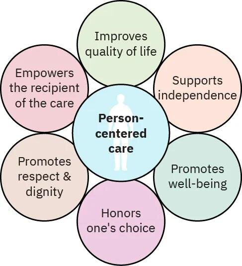
Patient-centered care puts the client at the center of care. Client preferences are its cornerstone:
- Endorsing participation: a safe space to share needs and feelings; advocate when they can't
- Promoting understanding: correct wrong information (online searches, patient portals)
- Sharing information: eases powerlessness and lets clients make informed decisions
Caring theories
Watson's theory of human caring
Holistic healing of mind, body and spirit through human-to-human connection. Nurses must care for themselves to care for others. Ten caritas processes give a shared language for caring moments (embrace, inspire, trust, nurture, forgive, deepen, balance, co-create, minister, open).
Swanson's theory of caring
- Maintaining belief: a hopeful attitude; finding meaning; asking about faith
- Knowing: understanding the situation, both yours and the client's view
- Being with: emotionally and physically present
- Doing for: doing what the client would do for themself if they could
- Enabling: guiding the client and family through events with information and support
Caring behaviors
- Listening: careful, active, empathetic
- Touch: expressive touch shows compassion. Ask permission first (touching without consent can be battery) and respect cultural preferences
- Being present: show up, listen, don't multitask
- Providing comfort: nonpharmacologic measures for pain and anxiety (warm blankets, fluffing pillows, repositioning, bedtime rituals)
- Showing compassion: know your own feelings before trying to help others
Culturally competent care
Culturally competent care is evidence-based care that fits the client's cultural values, beliefs, worldview and practices. It helps reduce health care disparities. Don't assume: ask.
- "Do you have any ethnic, spiritual or racial affiliation you identify with?"
- "Do you have any beliefs and practices related to health or illness?"
- "Do you follow any food preferences or prohibitions as part of your culture?"
| Practice | Examples from the slides |
|---|---|
| Decision making | Who makes family decisions varies by culture |
| Diet | Some Buddhists are vegetarian or avoid certain meats; Hindus may avoid meat; Muslims eat halal meat and avoid pork |
| Blood | Jehovah's Witnesses usually don't accept blood transfusions |
| Eye contact | East Asian and Latin American clients may avoid it out of respect; Native American clients may find it rude; Middle Eastern clients may avoid it between genders |
Cultural awareness (checking your own culture and biases), knowledge (learning about others), skill (assessing accurately), encounters (interacting across cultures) and desire (wanting to connect) build competence. Acculturation is taking on another group's cultural traits.
Communication by generation
| Generation | Tends to prefer |
|---|---|
| Silent generation and baby boomers (1945–1964) | Face-to-face, formal communication and attentive listening |
| Generation X (1965–1980) | Quick, direct communication; may question providers |
| Millennials (1981–1997) | Digital communication and regular feedback |
| Generation Z (1995–2009) | Very tech-savvy; expect instant feedback |
Spiritual care
Spiritual well-being is satisfaction and contentment with who one is and where one belongs in the universe. A spiritual assessment is part of holistic care. Spiritual distress is questioning life's meaning or one's beliefs, or anger at a higher power, shown as despair, anger, uncertainty or fear. Nurses listen and support, and can consult pastoral care (chaplains).
FICA: Faith and belief ("What beliefs help you cope?"), Importance, Community, Address in care.
HOPE: sources of Hope, Organized religion, Personal spirituality and practices, Effects on care and end-of-life issues.
- Palliative care: interprofessional symptom management for chronic or life-threatening illness, keeping the best possible quality of life.
- Medically futile: treatment that can't cure or extend life. Potentially inappropriate treatment: may not be futile but may not fit the client.
- Quality of life: fulfilling the client's own purpose and meaning.
Quick check
Before using touch to comfort a client, what should the nurse do?
Ask permission, and consider cultural preferences.
Which Swanson process is doing for a client what they would do for themself if they could?
Doing for.
A client is a Jehovah's Witness. Which treatment do you check about first?
Blood transfusions.
A client is angry at God after a diagnosis and asks "why me?" What is this, and who can help?
Spiritual distress. Listen and support, and offer pastoral care.
Intro to health assessment
The interview, the health history and the four assessment techniques.
Setting up the interview
- Use therapeutic communication: introduce yourself, eye contact as appropriate, ask what the client would like to be called
- Comfort, privacy and confidentiality: a warm, well-lit room, door or curtain closed
- Start with the least invasive tasks: health history and general survey first, then the physical assessment
- Watch nonverbal cues: what is the body language telling you?
- Avoid medical terms ("high blood pressure," not "hypertension"); use an interpreter as needed
The health history
| Part | Includes |
|---|---|
| Demographics | Age, address, gender, preferred pronouns, occupation, emergency contact, advance directives |
| Source of history | Client, family or records; how reliable is the historian? |
| Chief concern | Why the client came, in their own words, in quotation marks |
| History of present illness | Timeline and details: nature, duration, quality |
| Past health history and current status | Childhood illnesses, surgeries, chronic conditions, allergies, medications, habits, substance use |
| Family history | Grandparents, parents, siblings, children, grandchildren |
| Psychosocial | Relationships, support, work or living concerns, finances, education, ADLs (activities of daily living), spiritual health |
| Health promotion behaviors | Exercise, diet, awareness of risk factors, prevention (sunscreen, seat belts) |
| Review of systems | Questions about every body system, head to toe, to find existing problems |
The four techniques
| Technique | Key points |
|---|---|
| Inspection | Always first; starts the moment you walk in. Use every sense: odors, how the client sounds (clear speech, coughing, wheezing), grooming, season-appropriate dress, bruises, wounds, symmetry |
| Palpation | Touch for size, consistency, texture, temperature, location, tenderness. Back (dorsal) of the hand for temperature; palm for vibration; fingertips for pulses, position, texture, turgor, size. Light palpation (up to 1 cm) before deep. Palpate tender areas last |
| Percussion | Tapping to find size, location, tenderness, and air vs solid underneath. Direct (strike the body), indirect (strike your own finger on the body), fist (tenderness over the kidneys, liver, gallbladder) |
| Auscultation | Listening with your ears, a stethoscope or a Doppler; most often the heart and lungs |
General survey
Physical appearance (age, sex, LOC [level of consciousness], skin color, signs of abuse or distress), body structure (height, weight, symmetry, nutrition, posture), mobility (gait, range of motion), behavior (expression, mood, speech, dress, hygiene, odors) and vital signs.
Quick check
Which technique comes first?
Inspection.
Which part of the hand checks temperature?
The back (dorsal side).
When do you palpate a tender area?
Last.
Vital signs
Pulse, temperature, respirations, oxygen saturation and blood pressure.
Vital signs measure the body's most basic functions: to check general health, detect problems and track response to treatment. They're objective data and a baseline for spotting trends. The nurse finds expected and unexpected findings, intervenes, evaluates and documents promptly.
Pulse
- Rate: beats per minute. Rhythm: regular intervals. Strength: the volume of blood the left ventricle pushes out, graded 0 to 4+, with 2+ expected. Equality: the same on both sides.
- Count 30 seconds and double it; count a full minute if irregular.
- Apical pulse: at the apex, 5th intercostal space at the midclavicular line. S1 ("lub") is the mitral and tricuspid valves closing; S2 ("dub") is the aortic and pulmonic valves closing.
- Pulse deficit: apical rate minus radial rate. A difference means beats aren't reaching the periphery.
| Grade | Pulse |
|---|---|
| 0 | Absent, can't feel it |
| 1+ | Weak, diminished |
| 2+ | Normal |
| 3+ | Increased, strong |
| 4+ | Bounding |
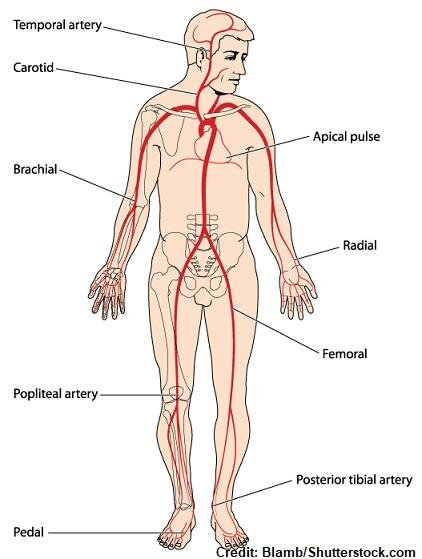
Bradycardia (under 60)
Causes: very fit, hypothermia, medications, chronic severe pain, hypothyroidism, relaxation
Nursing: protect from injury; watch for medication effects and low cardiac output (dizziness, low BP, chest pain, fainting)
Tachycardia (over 100)
Causes: exercise, fever or heat, medications, position changes, acute pain, hyperthyroidism, anemia, hypoxia, stress, anxiety, fear, shock
Nursing: look for the cause (pain? fever? anxiety?); protect from injury; watch for medication effects and low cardiac output
Temperature
The balance between heat the body makes and heat it loses.
| Term | Range |
|---|---|
| Expected (afebrile) | 36–38 °C (96.8–100.4 °F); average about 37 °C (98.6 °F) |
| Fever | Above 38 °C (100.4 °F) |
| Hyperthermia | 40 °C (104 °F) or higher |
| Hypothermia | Below 35 °C (95 °F) |
Core sites
Rectum, tympanic membrane, temporal artery, pulmonary artery, esophagus, bladder
Surface sites
Skin, mouth, axillae
| Site | How | Watch out for |
|---|---|---|
| Oral | Under the tongue in the pocket beside the frenulum | Recent food, drink, gum or smoking: wait 15–30 minutes |
| Tympanic | Pull the adult pinna up and back; aim slightly forward | Earwax or ear infection |
| Temporal artery | Center of the forehead, above the eyebrows | Sweat, head coverings |
| Axillary | Center of the axilla | Slower; affected by room temperature |
| Rectal | Insert about 3.5 cm (1.5 in) toward the umbilicus | Very accurate but uncomfortable; avoid with some rectal conditions |
Factors: hormones, exercise and activity, dehydration, illness, injury, recent food or drink, smoking, environment and circadian rhythm.
Respirations
| Term | Means |
|---|---|
| Eupnea | Normal: quiet, effortless, 12–20 a minute |
| Bradypnea | Regular but under 12 |
| Tachypnea | Regular but over 20 |
| Apnea | Periods of no breathing |
| Dyspnea | Difficult or labored breathing |
| Cheyne-Stokes | Cycles of shallow breaths growing deeper, then periods of apnea |
| Kussmaul | Deep, rapid breathing |
One inspiration plus one expiration is one breath. Count 30 seconds and double it; a full minute if abnormal. Factors: age, sex, pain, anxiety, smoking, body position, medications, neurologic injury, illness and how well the blood carries oxygen.
Oxygen saturation
SaO2 (arterial oxygen saturation) is how much oxygen is bound to hemoglobin in red blood cells. Measured by pulse oximetry it's called SpO2.
- Expected: 95–100%. Below 95% is low (hypoxia)
- Pulse oximetry: quick and noninvasive (finger, toe, earlobe); preferred for routine checks
- ABG (arterial blood gas): a blood sample; more invasive but measures directly
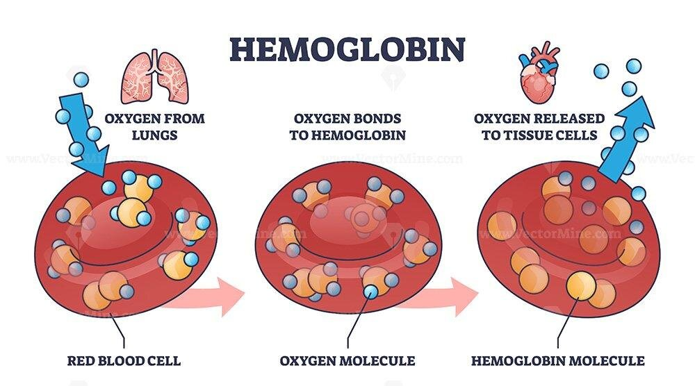
Blood pressure
The force of circulating blood on the vessel walls, in mm Hg, written systolic/diastolic. Systolic: the peak pressure when the heart contracts. Diastolic: the pressure while the heart relaxes and fills. BP = cardiac output × systemic vascular resistance, so anything that changes either one changes BP. Cardiac output = stroke volume × heart rate.
| Category | Systolic | Diastolic | |
|---|---|---|---|
| Normal | Less than 120 | and | Less than 80 |
| Elevated | 120–129 | and | Less than 80 |
| Hypertension stage 1 | 130–139 | or | 80–89 |
| Hypertension stage 2 | 140 or higher | or | 90 or higher |
| Hypertensive emergency (call the provider now) | Higher than 180 | and/or | Higher than 120 |
Intrinsic (nonmodifiable)
Age, ethnicity, genetics, hormones
Extrinsic (modifiable)
Weight, stimulants, sodium intake, stress, activity level, anxiety and fear
- Cuff too small or narrow → falsely high. Too large → falsely low.
- Pulse pressure = systolic minus diastolic: 140/90 → 50.
- Equipment: sphygmomanometer (BP cuff) and stethoscope; Korotkoff sounds are the sounds of blood through the partly squeezed artery.
Orthostatic (postural) hypotension
BP drops and the heart rate rises to compensate when the client moves from lying to sitting or sitting to standing: a systolic drop of 20 mm Hg or more, or a diastolic drop of 10 or more, within 1–3 minutes. The client feels dizzy and may faint. Causes include dehydration, hypotension, heart failure and nervous system disorders. Have the client change positions slowly and protect them from falls.
Too small reads too high. A tight cuff has to squeeze harder to close the artery.
Quick check
Heart rate 110, regular. How do you document it?
Tachycardia (over 100).
Respiratory rate 8. What's the term?
Bradypnea (regular, under 12).
A client just drank ice water. How long before an oral temperature?
15–30 minutes.
BP 140/90. What's the pulse pressure?
50 mm Hg.
Lying 128/78; two minutes after standing 100/70, pulse up, client dizzy. What is it?
Orthostatic hypotension: systolic dropped 28 mm Hg within 1–3 minutes.
Apical 88, radial 80. Pulse deficit?
8 (apical minus radial).
Which adult vital signs are outside the expected range: HR 52, RR 24, temperature 38.4 °C, SpO2 96%?
HR 52 (bradycardia), RR 24 (tachypnea) and 38.4 °C (fever). SpO2 96% is expected.
Pain
Pain is subjective, and it is whatever the client says it is.
What pain is
"An unpleasant sensory and emotional experience associated with, or resembling that associated with, actual or potential tissue damage." Pain threshold: the point where a stimulus is felt as pain. Pain tolerance: how much the client is willing to accept.
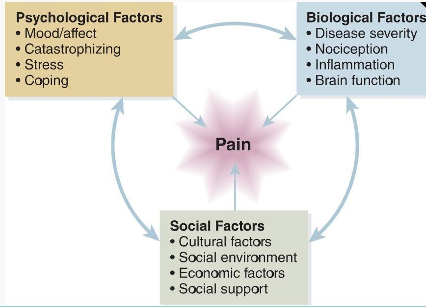
| Type | Means |
|---|---|
| Acute | Sudden or slow onset with a predictable end; less than 6 months |
| Chronic | Constant or recurring with no expected end; longer than 6 months |
| Nociceptive | From tissue damage (skin, joints, muscles, organs); can be referred |
| Neuropathic | From nerve damage; intense, burning, shooting |
| Cancer pain | Tumor, bone and treatment-related pain |
Words clients use: aching, throbbing, stabbing, pounding, sharp, gripping, dull, tearing, radiating, cutting, burning, scalding.
Assessing pain
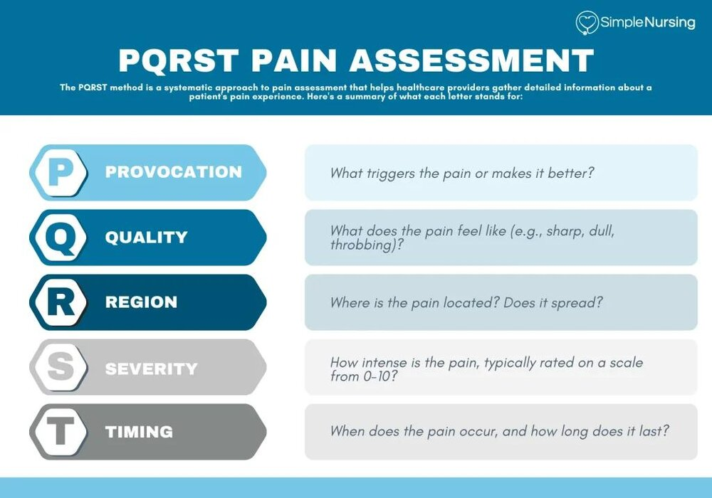
PQRST: Provocation or precipitating cause, Quality, Region, Severity (0–10), Timing.
Scales
- Numeric rating scale: 0–10
- Visual analog scale: a mark on a line
- FACES scale: faces for clients with communication barriers
- Nonverbal pain scale: for clients who can't report pain verbally
- FLACC scale: scores what you observe, for clients who can't communicate their pain
FLACC scale
A nonverbal way to assess pain in any client who can't tell you about it. Score each of the five categories 0–2 for a total of 0–10.
| Category | 0 | 1 | 2 |
|---|---|---|---|
| Face | No particular expression, or smiling | Occasional grimace or frown; withdrawn, disinterested; sad or worried | Frequent to constant quivering chin, clenched jaw, distressed face, fright or panic |
| Legs | Normal position or relaxed; usual tone and motion | Uneasy, restless, tense; occasional tremors | Kicking or legs drawn up; marked spasticity; constant tremors or jerking |
| Activity | Lying quietly, moves easily; regular, rhythmic breathing | Squirming, shifting, tense or guarded movements; mildly agitated; shallow or splinting breaths; sighs | Arched, rigid or jerking; severe agitation; head banging, shivering; breath holding, gasping, severe splinting |
| Cry | No cry or moan, awake or asleep | Moans or whimpers; occasional complaint or outburst | Steady crying, screams or sobs; frequent complaints; constant grunting |
| Consolability | Content, relaxed | Reassured by occasional touch or being talked to; distractible | Hard to console or comfort; pushes away, resists care or comfort measures |
FLACC: Face, Legs, Activity, Cry, Consolability.
Treating pain
Nonpharmacologic
- Positioning to relieve pressure
- Cutaneous stimulation: heat, cold, massage, touch, acupuncture, TENS (transcutaneous electrical nerve stimulation)
- Cognitive: distraction, relaxation, music
- Therapeutic touch: hands on or near the body
Medications
- Opioids (morphine, hydromorphone, fentanyl): most prescribed for pain; act on opioid receptors in the brain and spinal cord. Risk: sedation and respiratory depression
- Naloxone reverses opioids and brings the respiratory rate back up
- Nonopioids: NSAIDs (nonsteroidal anti-inflammatory drugs), acetaminophen, local anesthetics
- Adjuvants: work on the pain source (antidepressants, corticosteroids, botulinum toxin)
- PCA (patient-controlled analgesia): a pump the client controls
Routes: PO (by mouth), IM (intramuscular), IV, PR (per rectum), topical.
Opioids slow the breath. After giving an opioid, the respiratory rate is the vital sign to watch.
Quick check
A nurse gives an opioid for pain 6/10. Which vital sign is most affected?
Respiratory rate.
Nociceptive vs neuropathic: which is nerve damage?
Neuropathic. Nociceptive is tissue damage.
Pain that has lasted 8 months: acute or chronic?
Chronic (longer than 6 months).
Which medication reverses opioid respiratory depression?
Naloxone.
A client after a stroke can't speak and is grimacing, restless and guarding. How do you rate the pain?
With a nonverbal scale such as FLACC: score face, legs, activity, cry and consolability 0–2 each.
Who decides how much pain the client has?
The client. Pain is whatever the client says it is.